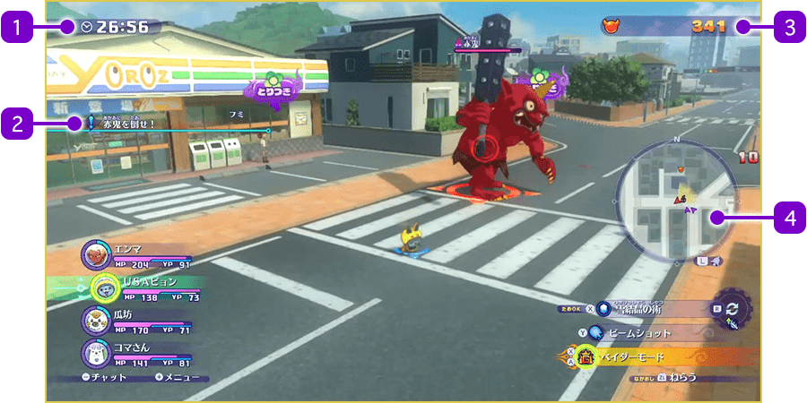
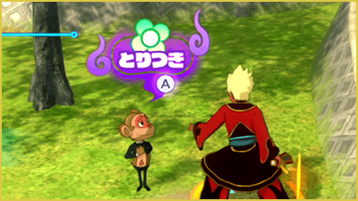
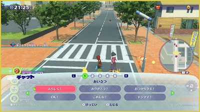
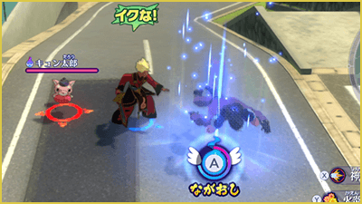

Blasters: Misiones
Si posees "Yo-kai Watch 4: We Look Up at the Same Sky", necesitarás adquirir el DLC de pago para jugar a "Blasters++" (los poseedores de "Yo-kai Watch 4++" no necesitan comprarlo).
Qué hacer durante la misión
En la opción "Desplegarse con acompañantes (Un jugador)", controlarás a uno de tus Yo-kai mientras que los demás actuarán de forma autónoma. La misión se completará con éxito si logras cumplir el objetivo (como "¡Derrota a todos los Yo-kai!") antes de que se agote el tiempo.
Al completar una misión, obtendrás las Orbes Oni y los objetos recogidos, e incluso podrá subir tu Rango Blasters.

- 1Tiempo restante
- 2Objetivo de la misión
- 3Orbes Oni obtenidos
- Al derrotar a los Yo-kai enemigos, estos soltarán Orbes Oni que podrás recoger al acercarte.
También pueden encontrarse tiradas por el mapa. - 4Minimapa
- Funciona de la misma manera que el minimapa del modo normal.
Menú de misión
Pulsa ＋ para abrir el menú, donde podrás ajustar la cámara o retirarte de la misión (retirarse se considerará una derrota).
※ El juego no se pausará mientras tengas abierto el menú de misión.
Acciones disponibles durante una misión
El control durante las misiones es prácticamente igual al del combate normal, pero también puedes realizar lo siguiente.
Espiritar (Ⓐ)
Acércate a un humano o Yo-kai que tenga la indicación "Espiritar" y pulsa Ⓐ para espiritarlo.
Podrás controlar al personaje poseído y usar sus habilidades especiales.
La espiritación se termina tras un tiempo límite o manteniendo pulsado R.

Hacer señas (L)
Pulsa L para enviar una señal y avisar a los demás jugadores de tu ubicación.
Es una función muy útil en el modo cooperativo.
Chat (-)
Pulsa − para abrir el menú de chat y enviar mensajes como saludos o instrucciones.
Muy es muy útil para el modo cooperativo.

Noqueo y Ascensión
Si los PV de un Yo-kai llegan a 0 durante una misión, quedará noqueado y su medidor de ascensión irá disminuyendo poco a poco. Si el medidor se vacía por completo, el Yo-kai ascenderá (quedará fuera de combate hasta terminar la misión).
Revivir tras quedar inconsciente (Resurrección)
Si un Yo-kai aliado queda inconsciente, acércate a él y mantén pulsado Ⓐ. Al hacerlo, su medidor de ascensión irá aumentando hasta rellenarse por completo y revivirlo.
Si el Yo-kai que estás controlando cae inconsciente, pulsa Ⓐ repetidamente para aguantar. Si resistes lo suficiente, es posible que un aliado venga a revivirte.

Misión fallida
La misión se considerará un fracaso si el tiempo llega a 00:00 o si todos los miembros desplegados quedan inconscientes o ascienden.
Si fracasas, perderás todos los Orbes Oni u objetos que hayas recogido durante la misión.